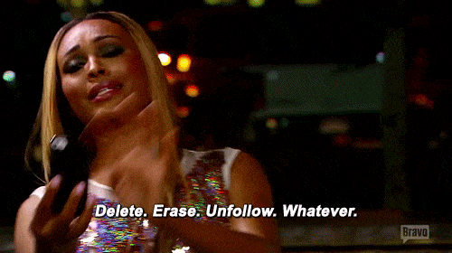
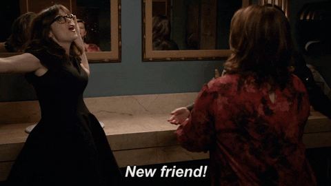
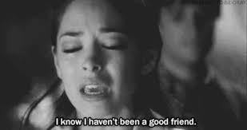

When to cut them off:
Do you have a toxic friend? Do you want to cut them off? But how do you know it is the right time? Here are some hints: -They never celebrate your wins but your losses -They expect everything from you and never return the favor -They are a bad influence.
What to do if you and your friend like the same person:
Talk to your friend, make sure he or she has the same amount of feelings for the person as you do. If your friend has more feelings for the person than you. You should be the bigger person and let them be together. Another option is for both of you to just forget about the person if it is really putting a divide in your friendship.How to move on from fake friends:
Surround yourself with people who you will benefit off of and who will benefit off of you. Become friends with the people who you do not usually talk to, be friends with people who will teach you how to become a better person
How to be a better friend?
Here is some advice on how to be a better friend. -Listen to their problems -Be there for them -Trust your friends -Tell them the truth. These might not be all but they will help you have a stronger relationship with your friends.
How to treat a fake friend?
-Limit the time spend together -Take care of yourself -Cut them off.How to tell your friend about their crush/ significant other? (When they are treating them unfairly)
-Sit with them -Talk to them gently about it -Give them a gift.